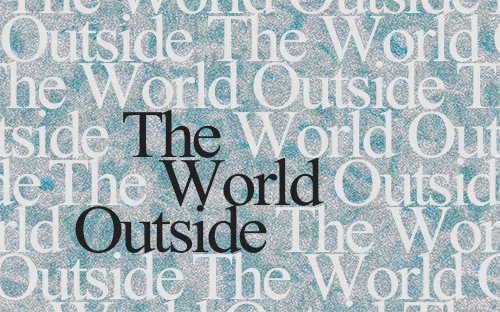

Carolina Roques
Comedy In The Pandemic
This is a small radio segment made for the TECH2008 Audio Capturing and Editing module about comedy in times of pandemic. It has an interview with the american comedian Pet Guercio, recorded via Zoom.
The World Outside

This is an audio piece made for the TECH2008 Audio Capturing and Editing module. The theme is the consquences of the pandemic. For a better experience please use headphones/earphones.